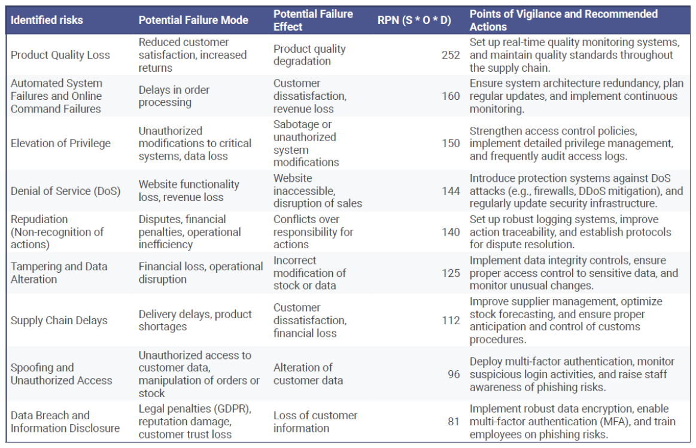
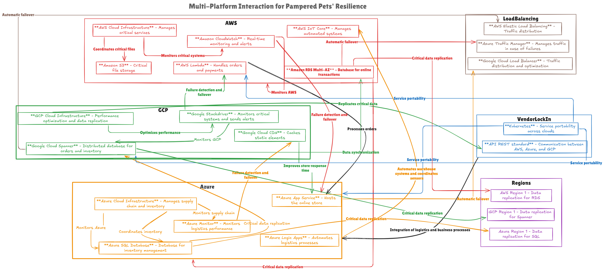

Digital and operational risks Assessment for Pampered Pets
Pampered Pets, a company specializing in high-quality pet food, is undergoing a major digital transformation, which includes establishing an international supply chain and automating warehouses globally. These changes, funded by Orla O'dour, have raised concerns from two major clients (HRH the King and Prince Albert II of Monaco) regarding product quality and supply chain security. The company has chosen a multi-cloud solution (AWS, Azure, GCP) to ensure resilience, scalability, and rapid disaster recovery in case of incidents.
Identifying Potential Risks
Several risks were identified, affecting both product quality and supply chain security. The following quantitative methods were used to model these risks:
The Monte Carlo simulation revealed that Pampered Pets could face average annual costs of €49,408.45, with a 90% chance that these costs will not exceed €135,000.
Results
The key risks include::
Recommendations
Outsourcing cybersecurity and critical infrastructure management: This would allow Pampered Pets to benefit from specialized expertise while ensuring regulatory compliance. Click here to view the Appendix 1 _ Analysis of Applicable Standards for Pampered Pets
- GDPR: Protection of personal data through regular audits, clear privacy policies, and encryption of sensitive data.
- ISO/IEC 27001: Implementation of an Information Security Management System (ISMS), strict management of access to critical information, and regular testing to identify vulnerabilities.
- ISO 22301: Establishment of a Business Continuity Plan (BCP) with a disaster recovery strategy for critical systems, ensuring that Pampered Pets can continue operations in the event of a major disruption.
- PCI DSS: Securing online credit card transactions with encryption systems and regular monitoring of transactions to ensure their integrity.
- ISO 9001: Implementation of a Quality Management System (QMS), conducting regular quality audits, and ensuring continuous improvement of production processes.
- ISO 28000: Management of logistical risks through the integration of buffer stocks, monitoring supplier performance, and implementing a risk management plan.
- NIS2: Strengthening cybersecurity for critical infrastructures with incident management protocols and regular communication with competent authorities in the event of a cyberattack.
Business Continuity Plan (BCP) and Disaster Recovery (DR) Strategy: Establish a plan to ensure operational continuity in the event of a disaster, including real-time monitoring and redundancy processes for critical systems. Proactive management of quality and supply chain: Diversify suppliers and establish buffer stocks to reduce the impact of delays.
Multi-Cloud Architecture
Pampered Pets is adopting a robust multi-cloud architecture to ensure both Business Continuity (BC) and Disaster Recovery (DR). This architecture, leveraging Amazon Web Services (AWS), Microsoft Azure, and Google Cloud Platform (GCP), distributes critical workloads across multiple platforms, minimizing the risk of failure and ensuring rapid recovery in the event of an incident.
AWS – Managing Critical Systems and DR
AWS is used to manage critical systems, including warehouse automation and online transaction processing. Key AWS services include:

Azure – Managing Supply Chain and BC
Microsoft Azure is responsible for managing the supply chain and stock, with a focus on business continuity:

GCP – Network Performance Optimization and DR
Google Cloud Platform (GCP) is used to optimize network performance and ensure data replication globally:

AWS ensures critical systems remain accessible even during major outages. Continuous monitoring and data replication ensure RTO (Recovery Time Objective) and RPO (Recovery Point Objective) remain below one minute, minimizing disruptions. Azure ensures that supply chain management remains efficient and that stock is available even during significant outages. Through monitoring tools and redundancy, Azure ensures business operations can continue without significant disruption. GCP ensures that critical data is continuously replicated across multiple regions. System redundancy and optimized network management guarantee fast recovery in case of a disaster, without compromising service quality.
Business Continuity (BC) and Disaster Recovery (DR) Strategy
The combination of AWS, Azure, and GCP creates a resilient multi-cloud architecture that addresses BC and DR needs:
Automatic Failover and Data Recovery
In the event of a failure, automatic failover mechanisms redirect critical services to available platforms:
AWS Elastic Load Balancer, Azure Traffic Manager, and Google Cloud Load Balancer ensure traffic distribution, preventing service interruption Data replication across platforms guarantees quick recovery, enabling systems to return to their initial state once the failure is resolved (failback).
Conclusion
Pampered Pets identifies critical risks: product quality loss, automated system failures, and supply chain delays. Quantitative methods reveal the financial impacts. Recommendations include outsourcing cybersecurity, diversifying suppliers, and strengthening quality control. The multi-cloud strategy ensures resilience, scalability, and security. Through proactive monitoring and robust failover systems, Pampered Pets guarantees continuous operations 24/7, 365 days a year.